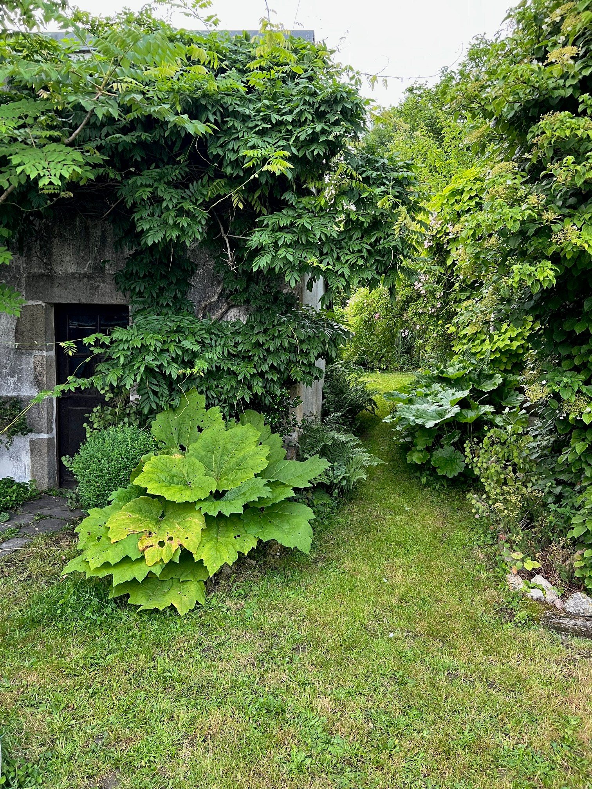
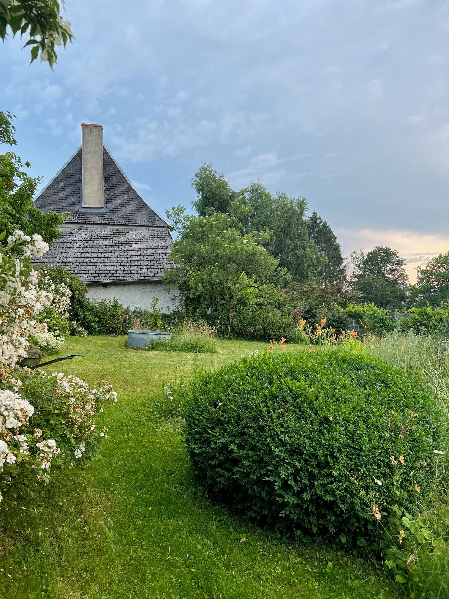
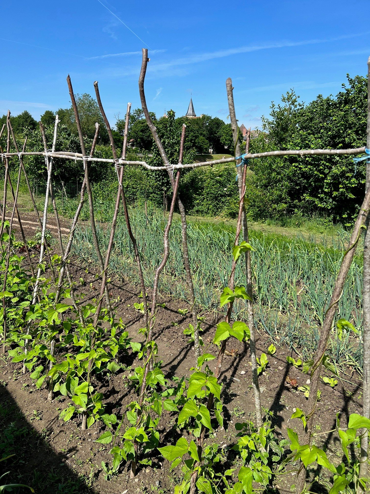
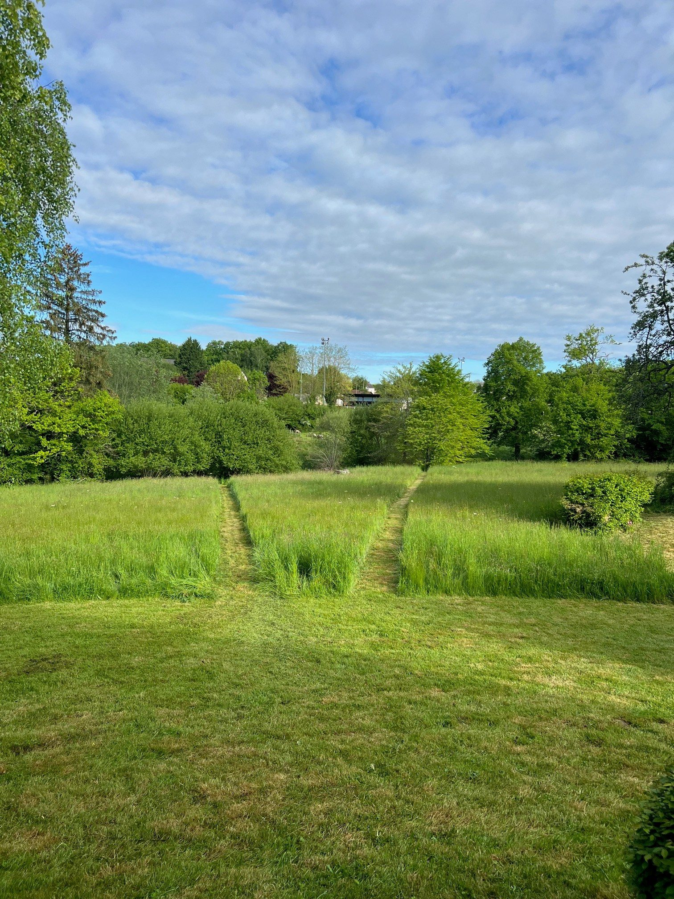

Commande
Ce jardin privé en Auvergne s'articule autour d'une grande prairie fauchée une fois l'an, qui s'ouvre sur un vallon doux où coule un ruisseau. La vue offre une lecture claire sur le vallon et les reliefs environnants.
Un ancien lavoir, redécouvert au cours du projet, et un petit plan d'eau bordé de saules blancs ponctuent le paysage. Ces éléments patrimoniaux ont été conservés et mis en valeur, révélant l'histoire du lieu.
Autour de la maison, une succession d'espaces habités — jardin ombragé, potager, jardin ornemental, verger replanté — forme un lieu à la fois domestique et profondément écologique, inscrit dans la dynamique naturelle du site.




